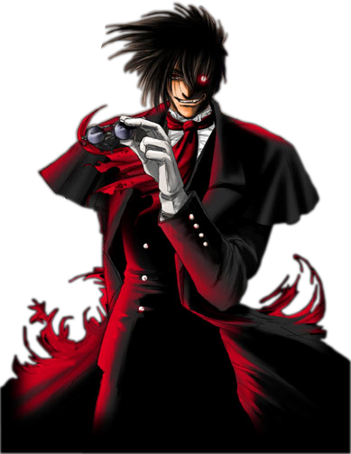

Generos de Anime

- Shojo
- Kyokou Suiri
- ReLIFE
- Itsudatte Bokura no Koi wa 10 cm Datta
- Clannad
- Fukumenkei Noise
- Netoge no Yome wa Onnanoko ja Nai to Omotta?
- Gore
- Corpse Party Missing Footage
- Ousama Game The Animation
- Higurashi no Naku Koro ni
- Killing Bites
- Hellsing Ultimate
- Another
- Shonen
- Saint Seiya The Lost Canvas
- Fullmetal Alchemis Brotherhoot
- Boku No Hero Academia
- Enen No Shobutai
- BAKI
- Hajime no Ippo
- Ficcion
Para los fans de Silent Hill
A continuacion se relata la cronologia en que se deberian jugar los juegos de esta preciada franquisia en caso de querer seguir la historia correctamente.
- Silent Hill
- Silent Hill 3
- Silen Hill Origins
- Silen Hill 2
- Silent Hill 4 The Room
- Silent Hill Homecoming
- Silent Hill Downpour
El primer juego de la Play Station One.
La tercera entrega, la continuacion del primer juego. Nos relara mas acerca de lo que sucedio despues.
Nos narra los origenes de la historia. Si bien seria mejor jugarlo primero, probablemente se lleve algunas sorpresas, es por eso que esta aqui.
Nos profundisa mas acerca de la linea temporal de la primer entrega.
Este mantiene un estrecho arco argumental con la segunda entrega, de ahi el porque esta aqui.
Lamentablemente el Team Silent no estuvo tras el desarrollo de este juego, pero eso no quita que tamien sea una obra de arte. Pero al no ser desarrollado por el Team Silent carece de relacion con la saga, de ahi el porque esta aqui.
En este caso tampoco hay seguimiento con la saga original.